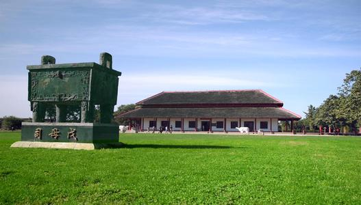
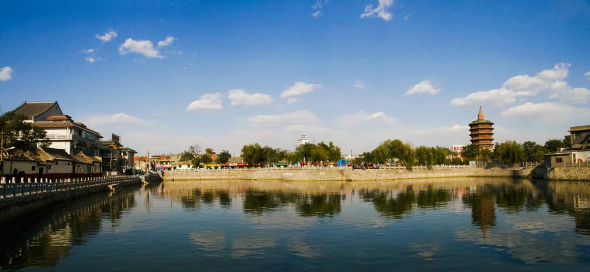

<!DOCTYPE html>
<html>
</html>
<head>
  <meta charset="utf-8">
  <meta http-equiv="X-UA-Compatible" content="IE=edge">
  <title>Anyang</title>
  <meta name="description" content="">
  <meta name="viewport" content="width=device-width, initial-scale=1">
  <meta name="robots" content="all,follow">
  <!-- Bootstrap CSS-->
  <link rel="stylesheet" href="vendor/bootstrap/css/bootstrap.min.css">
  <!-- Font Awesome CSS-->
  <link rel="stylesheet" href="vendor/font-awesome/css/font-awesome.min.css">
  <!-- Google fonts - Roboto-->
  <link rel="stylesheet" href="https://fonts.googleapis.com/css?family=Roboto:400,300,700,400italic">
  <!-- owl carousel-->
  <link rel="stylesheet" href="vendor/owl.carousel/assets/owl.carousel.css">
  <link rel="stylesheet" href="vendor/owl.carousel/assets/owl.theme.default.css">
  <!-- theme stylesheet-->
  <link rel="stylesheet" href="css/style.default.css" id="theme-stylesheet">
  <!-- Custom stylesheet - for your changes-->
  <link rel="stylesheet" href="css/custom.css">
  <!-- Favicon-->
  <link rel="shortcut icon" href="img/anyang/icon.jpeg">
  <!-- mycss-->
  <link  rel="styleSheet"  href="css/mycss.css" />
  <script type="text/javascript" src="js/img_round.js" ></script>
  <!-- Tweaks for older IEs--><!--[if lt IE 9]>
    <script src="https://oss.maxcdn.com/html5shiv/3.7.3/html5shiv.min.js"></script>
    <script src="https://oss.maxcdn.com/respond/1.4.2/respond.min.js"></script><![endif]-->
    <script type="text/javascript" charset="utf-8"  src="js/L2Dwidget.0.min.js"></script>
    <script type="text/javascript" charset="utf-8"  src="js/L2Dwidget.min.js"></script>
    <script type="text/javascript">
        L2Dwidget.init({"display": {
            "superSample": 2,
            "width": 200,
            "height": 400,
                  "position": "left",
                      "hOffset": 0,
            "vOffset": 0
              }
          });
    </script>
    <style>
      #live2dcanvas {
        border: 0 !important;
      }
    </style>
</head>
<body>
  <div id="all">
    <div class="container-fluid">
      <div class="row row-offcanvas row-offcanvas-left"> 
        <!--   *** SIDEBAR ***-->
        <div id="sidebar" class="col-md-4 col-lg-3 sidebar-offcanvas">
          <div class="sidebar-content">
            <h1 class="sidebar-heading"> <a href="index.html">安阳 Anyang</a></h1>
            <ul class="sidebar-menu">
              <!-- Link-->
              <li class="sidebar-item"><a href="index.html" class="sidebar-link active">主页</a></li>
              <!-- Link-->
              <li class="sidebar-item"><a href="about.html" class="sidebar-link">去旅游</a></li>
              <!-- Link-->
              <li class="sidebar-item"><a href="contact.html" class="sidebar-link">社区论坛</a></li>
          </ul>
            <p class="sidebar-p">&ensp;&ensp;安阳，河南省地级市，古称相、殷、邺、邺城、邺都、邺郡、相州、彰德等，简称殷或邺，位于中国中北部、河南省最北部，地处河南、山西、河北三省交界处，东接濮阳，西临长治，南接鹤壁、新乡，北临邯郸。 </p>
            <p class="sidebar-p">&ensp;&ensp;历史上，先后有商朝、曹魏、后赵、冉魏、前燕、东魏、北齐等在安阳建都，素有“七朝古都”之称。</p>
            <!--
            <p class="social"><a href="#" data-animate-hover="pulse" class="external facebook"><i class="fa fa-facebook"></i></a><a href="#" data-animate-hover="pulse" class="external gplus"><i class="fa fa-google-plus"></i></a><a href="#" data-animate-hover="pulse" class="external twitter"><i class="fa fa-twitter"></i></a><a href="#" title="" class="external instagram"><i class="fa fa-instagram"></i></a><a href="#" data-animate-hover="pulse" class="email"><i class="fa fa-envelope"></i></a></p>
            
            <div class="copyright text-center text-md-left">
              <p class="credit">Copyright &copy; 2019.Company name All rights reserved.<a target="_blank" href="http://sc.chinaz.com/moban/">&#x7F51;&#x9875;&#x6A21;&#x677F;</a></p>
            </div>
            -->
          </div>
        </div>
        <!--   *** SIDEBAR END ***  -->
        <!--   *** DETAIL ***-->
        <div class="col-md-8 col-lg-9 content-column white-background">
          <div class="small-navbar d-flex d-md-none">
            <button type="button" data-toggle="offcanvas" class="btn btn-outline-primary"> <i class="fa fa-align-left mr-2"></i>Menu</button>
            <h1 class="small-navbar-heading"> <a href="index.html">Creative </a></h1>
          </div>
          <div class="row">
            <div class="col-xl-10">
              <div class="content-column-content">
                <h1>去旅游</h1>
                <hr />
                <h3>部分景点</h3>
                <div>
                  <div>
                    <div id="container">
                      <div id="list" style="left: -1000px;">
                          
                          
                          
                          
                          
                          
                          
                          
                          
                          
                      </div>
                      <div id="buttons">
                          <span index="1" class="on"></span>
                          <span index="2"></span>
                          <span index="3"></span>
                          <span index="4"></span>
                          <span index="5"></span>
                      </div>
                      <em id="prev" class="arrow">&lt;</em>
                      <em id="next" class="arrow">&gt;</em>
                  </div>
                  <hr />
                  <div>
                    <p>&ensp;&ensp;安阳，河南省地级市，古称相、殷、邺、邺城、邺都、邺郡、相州、彰德等，简称殷或邺，位于中国中北部、河南省最北部，地处河南、山西、河北三省交界处，东接濮阳，西临长治，南接鹤壁、新乡，北临邯郸。截至2019年，安阳市总面积7413平方公里，辖4个区、1个县级市、4个县，常住人口519.22万。 [1] 
                      安阳是中国八大古都之一，甲骨文的故乡、周易的发源地、红旗渠精神的发祥地、国家历史文化名城和豫晋冀三省交界地区区域性中心城市，是京津冀周边协同发展区城市，是省委、省政府支持建设的重要区域中心城市。 [2] 
                      历史上，先后有商朝、曹魏、后赵、冉魏、前燕、东魏、北齐等在安阳建都，素有“七朝古都”之称。盘庚迁殷、武丁中兴、奴隶傅说拜相、女将军妇好、文王拘而演《周易》、西门豹投巫治邺地、蔺相如降生古相村、信陵君窃符救赵、项羽破釜沉舟、曹操邺城发迹、三朝宰相韩琦、抗金名将岳飞等名人轶事层出不穷。历史学家郭沫若来安阳时留下“洹水安阳名不虚，三千年前是帝都；中原文化殷创始，观此胜于读古书”的著名诗句。
                      2018重新确认为国家卫生城市。 [3]  2019年11月15日，被授予“国家森林城市”称号。</p>
                  </div>
                  <hr />
                  <div>
                    <h3>地图康康在哪</h3>
                    <iframe src="./map.html" width=100% height=600px frameborder="0"></iframe>
                  </div>
                  <div><hr /><h3>(MORE TODO)<h3></div>
                </div>
              </div>
            </div>
          </div>
        </div>
      </div>
    </div>
  </div>
  <!-- JavaScript files-->
  <script src="vendor/jquery/jquery.min.js"></script>
  <script src="vendor/popper.js/umd/popper.min.js"> </script>
  <script src="vendor/bootstrap/js/bootstrap.min.js"></script>
  <script src="vendor/jquery.cookie/jquery.cookie.js"> </script>
  <script src="vendor/owl.carousel/owl.carousel.min.js"></script>
  <script src="vendor/masonry-layout/masonry.pkgd.min.js"></script>
  <script src="js/front.js"></script>
</body>